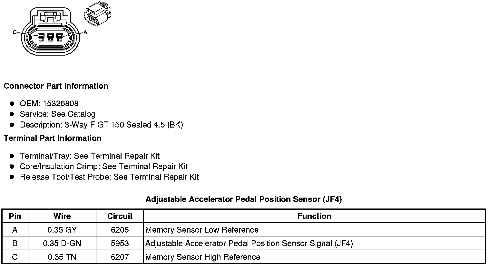
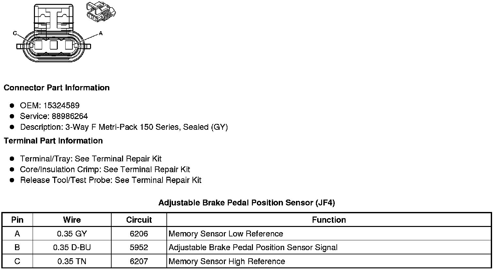

Operation CHARM
: Car repair manuals for everyone.
Home
>>
Cadillac
>>
2008
>>
SRX AWD V8-4.6L
>>
Repair and Diagnosis
>>
Sensors and Switches
>>
Sensors and Switches - Accessories and Optional Equipment
>>
Pedal Positioning Sensor
>>
Diagrams
Pedal Positioning Sensor: Diagrams
Component Connector End Views
Adjustable
Accelerator Pedal Position Sensor
(JF4)

Adjustable Brake Pedal Position Sensor (JF4)

Brake Pedal Position Sensor